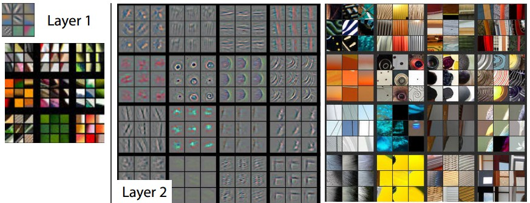
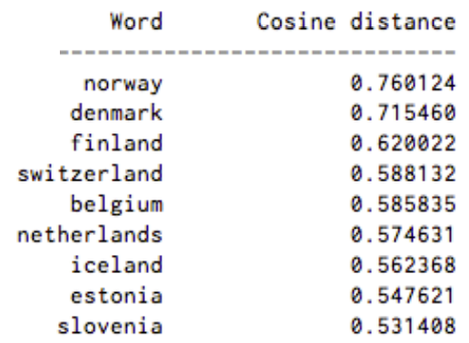

Day 9 - Feature Extraction
Posted on June 8, 2017
by Govind Gopakumar
Prelude
Announcements
- Programming Tutorial on Ensemble methods, PCA up
- Lecture slides for usage of Neural Network libraries up
- Visual tool to create your own network and train them put up.
Recap
SVM
- Learn “good” lines
- Can be used with the kernel trick
Bagging and Boosting
- How to train multiple unrelated models
- How to train powerful models using weak parts
Neural networks
- High level overview of how they work
- Composition of different perceptrons and activations
Introduction
How do our algorithms work?
Features in data
- All of our examples have associated “features”
- We collect these features in a central place
- Our algorithms rely on properties of these features
Matrix notation
- We rely on it being of the form of \(NxD\)
- Most data in the real world may not be of this form!
Why do our algorithms work?
Geometric algorithms
- Linear seperability of the features
- Clustering induced by the features
- High relationship between features and the labels.
Dimensionality of features
- A lot of dimensions can make it a “rich” model
- Comes at computational cost
- Tricks like PCA, Kernel trick allow us to modify as per our problem.
Images
Why images?
Ubiquity of images
- Cameras on every phone
- Instagram, Facebook all promote and host photos
- Key to understanding the world around us!
Where will this be useful?
- Face detection algorithms
- Image captioning algorithms
- Self driving cars!
Basics of Images
Image representation
- Broad distinction : greyscale / color
- Image can be viewed as a giant matrix!
- In case of color, it could even be three matrices.
Image statistics
- Image sizes can vary too! (8x8 -> 1000x1000)
- What statistics can we compute?
Simple Image Features - I
Night vs Day
Simple Image Features - II
Night and day?
- What were the differences?
- What were same?
- How do we capture this using features?1
Image statistics?
- Average color?
- Histogram of colors?
- Variance of colors?
- Majority color?
Are they enough?
Dog vs Girl
Complex Image Features - I
Girl vs Dog?
- What was same?
- What was different?
- Can we capture this difference in features?2
Textures, edges, shapes
- What’s a texture?
- What is an edge?
- What are shapes?
Complex Image Features - II
What could we capture?
- Edge locations?
- Color changes?
- Local patterns?
- Textures?
How do we capture it?
- Filtering techniques
- Borrow from image processing
Complex Image Features - III
Filters / Feature detector
- Defined by a small matrix
- “Pass” or “convolve” it over the image
- Compute some statistic depending on filter type
Examples of filters
- Canny filter
- Sobel filter
- Harris filter
Complex Image Features - IV
1D Filtering
- Toy example : array of data
- We wish to apply a feature detector to it
- Detector defined by matrix [2, 0, -2]
Example data
- Assume the array is : [1, 2, 3, …., 10, 5, 4, 3, … -3]
- You may have to “pad” the array!
- Where does it spike? What does the output look like?
Complex Image Features - V
Applying a filter / detector
- Put the matrix / filter on each point of the image
- “Convolve” it with the image
- Put output in the same location as original point
Sobel filter
- Defined using two matrices
- \(\begin{bmatrix} 1 & 0 & -1 \\ 2 & 0 & -2 \\ 1 & 0 & -1 \end{bmatrix}\)
- What would this do?
- How do we combine them?
Complex Image Features - VI

Original Image
Complex Image Features - VII

Filtered Image
Complex Image Features - VIII
What did that get us?
- Way to find locations of “edges”?
- Now more features are available!
- How do we use them?
How can we extend this?
- “Corner” discovering filters!
- “Ridge” discovering filters
Complex Image Features - IX
Gradients
- We computed the gradients, can we be smart about it now?
- Simple idea : Don’t use the entire image, aggregate it!
- Worked with color, intensity etc, why not this?
Histogram of Oriented Gradients
- “HOG” feature
- Aggregation of gradients in an image
- What images will be this useful for?
Complex Image Features - X
How does this generalize?
- Curve detection : Filter will describe a curve
- Shape detection : Filter will describe a shape
How do we choose these filters?
- We generally can’t!
- Only basic ones will be general.
- Can we “learn” these filters from data?
Complex Image Features - XI
Convolutional Neural Networks
- Layers : Different filters / kernels
- Multiple activations are used
- AlexNet - ~12 layers, ResNet - ~150 layers
How do they work?
- Low levels learn “edge”, “corner” filters
- High levels combine this information, “shape” filters
Complex Image Fetures - XII

Neural Network visualization
Complex Image Fetures - XIII

Neural Network visualization
Text
Why images?
Ubiquity of text
- Emails, chats, posts
- News articles, most of the web is text!
- Incorporate more “knowledge” than images at times
Where will this be useful?
- Automatic summarization
- Question answering systems
- Knowledge graph systems
Basics of Text
What form is text data in?
- Paragraphs, words
- Composed of a sequence of words, possibly following a grammar
- Differences in spelling, errors, punctuation
Basic text features
- Count vectorizer! - What?
- Stemming - Cluster similar words together
- Stop word removal - Remove useless words
Basic text features - I
One-hot vectors
- Encode presence / absence of a word
- Either from a dictionary, or from a vocabulary
- Cleaning it up : lemmatizing, stop word removal
- Can even remove very common words
Extensions
- TF : Count of how many times a word appeared in a document
- IDF : \(\log\frac{\|D\|}{\|\{d:t\in d\}\|}\)
- TF-IDF : TF*IDF
- What does this measure?
Basic text features - II
Toy example
- Document 1 : { (this, 1), (is, 1), (a, 2), (sample, 1)}
- Document 2 : { (this, 1), (is, 1), (another, 2), (example, 3)}
Computation
- TF(“this”, D1) = 0.2
- IDF(“this”) = \(\log{\frac{2}{2}} = 0\)
- TF(“example”, D2) = 3/7
- IDF(“example”) = 0.301 (log2)
- TFIDF(“example”, D2) = 0.13
Basic text features - III
What can we do with this?
- We obtain a vector of values for each document
- Normalizing this, we can actually visualize a geometry!
- Use our favourite classifier on this!
- Dot product gives “similarity” between documents!
What information is lost?
- No grammatical structure
- Ordering of words is lost
Basic text features - IV
Extending these methods
- Count n-grams : Obtain some increased structure
- Cluster similar words together : Allow some leeway in words
- Part of Speech tagging : Split sentences into verbs, nouns etc
How far can we go?
- “Meaning” is hard to justify
- “Grammar” is hard to model
- Statistical techniques can only take us so far!
Advanced text features - I
Where do we go from here?
- Learn word “embeddings”
- Google’s “word2vec” model does exactly this.
- Learns from a corpus - Word to vector space mapping
Context based modelling
- General idea : predict word from context/association
- Train “model” to predict word correctly from noise
- “Learns” semantic relations too (king - man + woman = queen!)
Advanced text features - II
Results?
- Learns associations from text
- (Iraq - Violence) = Jordan
- (Human - Animals) = Ethics
- (Rome - Italy) = (Beijing - China)
Usage?
- Google’s Machine Translation efforts have drastically improved!
- Real time translation of text, audio, video!
- Automatic summarization improves
- Story writing can also be done!
Advanced text features - III

Similarity with Sweden
Advanced text features - IV

Embeddings Learned
Video
How do we model video?
As an image itself!
- Consider a video to be hundreds of images!
- Pro : Adapt techniques in image processing
- Con : Far too much data
As a set of moving images
- Compute “flow” between images
- Identify features based on flow
- Actions : flow in specific regions!
Conclusion
Concluding Remarks
Takeaways
- How to generate features in images
- What to consider when generating features
- What features exist for text data
Announcements
- Last class tomorrow - no theory, practical aspects of ML
- Programming tutorials will be uploaded over the next few days